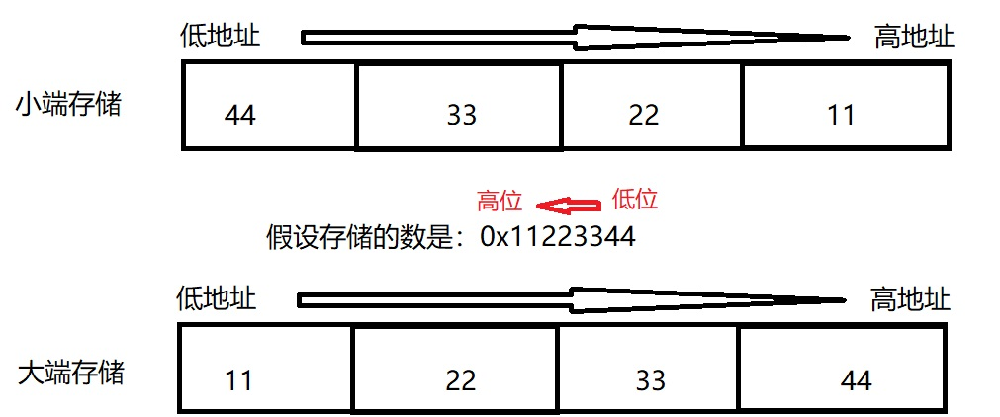

大小端
-
什么是字节序
字节：计算机中，数据存储是以字节为单位的，一个字节有8位，位是计算机最小的存储空间。
强类型的编程语言，每个变量的定义都是确定类型的，不同的类型占用的字节数不一样。比如，在
C语言中，char类型占用一个字节，short类型，一般占用两个字节，int类型，一般占用四个字节。那么这些多字节的数据如何在内存中存放呢，内存地址是从0一直递增的，可能的存放顺序是，数据的低字节位存放在内存的低地址，数据的高字节位存放内存在内存的高地址；或者反之，数据的低字节存放在内存的高地址，数据的高字节存放在内存的低地址；多字节的高低字节在内存中存放的顺序，称为字节序；内存的最小单位是字节，有些数据类型占用的空间大小超过了一个字节，那么就存在一个数据在内存中如何存放的问题。数据的存放可以是，数据的低字节存放在内存的低地址区，也可以是，数据的低字节存放在内存的高地址区；
如下图所示，大端存储：数字的低字节存入内存的高地址区，数字的高字节区存入内存的低地址区；小端存储：数字的低字节存入内存的高地址区，数字的高字节存入内存的低地址区；

这两种存储方式，没有好坏之分，存储方式与CPU的实现有关；
-
什么是大小端
当数据的低字节存入内存的高地址区，数据的高字节存入内存的低地址区时，称为大端模式；反之，则称为小端模式；大端模式，比较适合人的阅读习惯，从数字的高位开始读；
-
存在的意义
根据不同的硬件实现，大小端模式都广泛使用在不同的CPU中；
-
如何判断大小端
不管CPU是使用大端模式还是小端模式，CPU总能正确的读取内存的值，也就是説如果不需要大小端转换时，不需要知道CPU的大小端。当处理音频数据时，有时需要转换大小端；音频音质较高时，音频的一个采样占用。